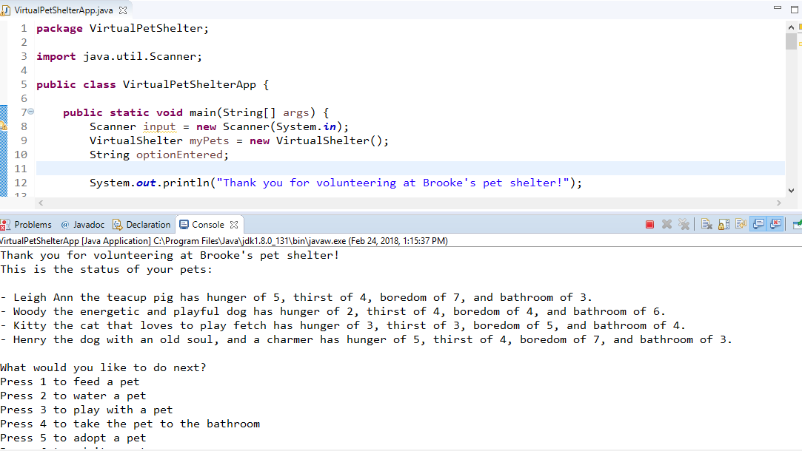
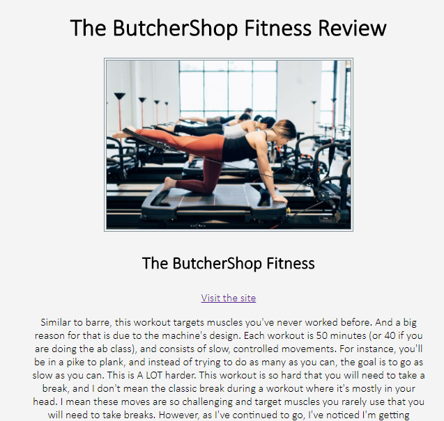
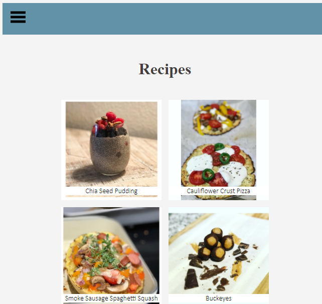

Virtual Pet Shelter
Created classes and interfaces to generate an interactive pet shelter. Allowed users to care for their pet, and their pet's health was contingent on the user's input.
Skills and Technology Utilized:
- Java
- Eclipse
- Git
- OOP
- TDD
Review Site
Created a review site for my favorite workouts.
Skills and Technology Utilized:
- HTML
- CSS
- Spring
- Sublime
Balancing with Brooke Blog
Constructed a personal blog, curating various articles including homemade recipes, fitness and wellness reviews, and personal stories.
Skills and Technology Utilized:
- JavaScript
- Atom
- WinSCP
- Bluehost